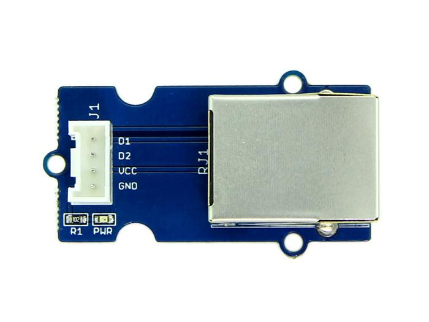
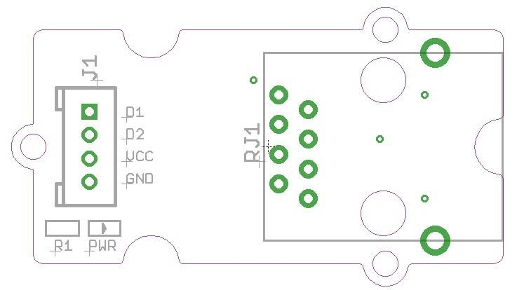
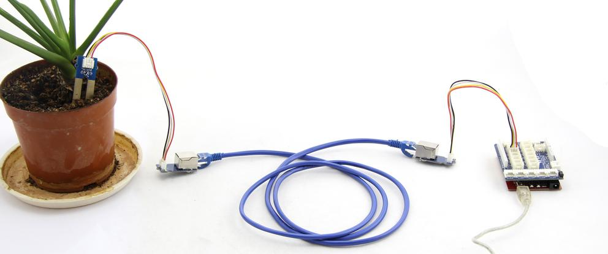

The Grove-RJ45 Adapter is a module which can convert a standard Grove connector to a RJ45 connector. Universal 4-Pin Grove cables can not meet the requirements when Arduino remote connect and control Grove module. Through two RJ45 adapter and a cable, It is able to achieve communication between Arduino and Grove module. This help solve the problem that Arduino and Grove are not convenient to connect because of the distance issue.
Module: COM04182P


| Grove Connecter | R45 Connector |
|---|---|
| VCC | A7 |
| GND | A8 |
| D1 | A5 |
| D2 | A4 |
If you want to use the Moisture Sensor to real-time detect the moisture of soil in your garden, but you do not want to go to the garden personally. How to do it? Using two RJ45 adapter and a long network cable, you can solve this problem. The Hardware Installation should be:

You may need to write the code by yourself for the special applications. But we can guarantee that you can always know the soil moisture of plants by observing the output data of the moisture sensor.
You may want to ask why not use a long Grove cable instead of two Grove - RJ45 and a network cable, the reason is the network cable has a weak attenuation.
Grove - RJ45 Adapter Eagle File
If you have questions or other better design ideas, you can go to our forum or wish to discuss.
Copyright (c) 2008-2016 Seeed Development Limited (www.seeedstudio.com / www.seeed.cc)